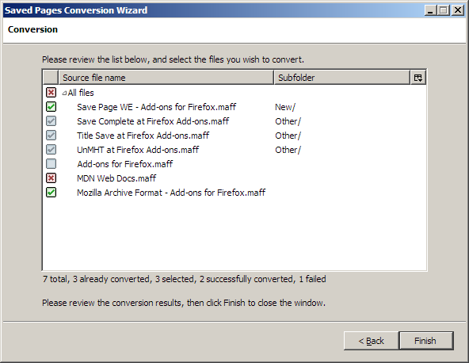

Add-on documentation
The Mozilla Archive Format add-on is an independently developed program that
can be installed on the Firefox and SeaMonkey browsers to open and save MAFF
and MHTML archives.
Firefox add-on technology is modernizing, and traditional add-ons like
Mozilla Archive Format will stop working soon. The announced cut-off date is
November 14, 2017.
Alternatives
This add-on uses legacy technology that will not be supported by future
versions of Firefox. In order to access pages saved by this add-on, you can
use one of the following alternatives:
- The Saved Pages Conversion Wizard can be used to
convert your saved pages to a different file format. This is recommended for
most situations, and future updates to the add-on will provide a guided path
through this conversion process.
- MAFF files can be opened using any ZIP extraction utility,
and most operating systems can recognize them natively after renaming the
file extension from .maff to .zip.
- MHTML files can be opened using Microsoft Internet Explorer
on Windows, and on other operating systems using Google Chrome.
- Compatibility with SeaMonkey and with Firefox Extended Support Release
(ESR) will be maintained until June 2018, but support for either browser
beyond this date is not planned.
- Independent solutions for Windows, Mac, and Linux may become available in
the future.
Converting previously saved pages to other file
formats
The Saved Pages Conversion Wizard automates the process of opening the web
pages you stored on your computer one by one and saving them again in a
different file format. While the pages saved by this process usually look like
the originals, in some cases the styling might not be replicated accurately.
Because of this, the procedure never deletes the original files.
Before you begin
- You should always keep a backup copy of the originals.
- If your pages were originally saved by the Mozilla Archive Format add-on,
the conversion will generally be more accurate. If you used other programs or
the standard Firefox save system, there is a higher chance that the converted
pages will be different.
- If you saved more than one page in a single MAFF archive, you should first
extract the archive using an ordinary ZIP utility. The resulting complete web
pages can then be converted to MHTML using this procedure.
- If you are converting from a web archive format, ensure you have enough
free space in your temporary folder, since the archives are normally
extracted to the temporary folder before conversion. If you need to convert
many pages and don't have enough free space, you may want to convert only
some of them at a time, and restart the browser between each conversion
batch.
- In some cases the automatic conversion may fail. If this happens, the
pages whose conversion failed can still be opened and re-saved manually.
- The Saved Pages Conversion Wizard is under active development, and future
versions may be able to convert more pages than the current version.
The guided procedure can be started from the File » Convert Saved
Pages menu item after
installing the Mozilla Archive
Format add-on.
Choosing a file format

- Complete web pages (with support folders for data files)
-
This file format is used by default in Firefox. Web pages are stored as
file / folder pairs, for example Page.html and
Page_files.
This format provides the best compatibility because it can be opened
in any browser without installing additional software. It can also include
large video and audio files efficiently.
However, the name of the folder cannot be changed after the page is
saved. The page may also become unreadable if the support folder is separated
from the associated file, or if the file / folder pair is moved to
a different file system where special characters, accented characters, or
long file names may be lost. Backups may be significantly slower because the
support folder often contains many small files.
- MHTML archives
-
This file format was originally implemented by Microsoft Internet Explorer,
and solves the issues with file / folder pairs because the entire
web page is stored in a single file.
However, MHTML files use more disk space and are not suitable for saving
large video and audio files. MHTML files including such content would become
very slow to load.
This format provides generally good compatibility because it can be opened
by Microsoft Internet Explorer and Google Chrome. On the other hand,
Firefox cannot open MHTML files without installing an add-on. One
compatible with future versions of Firefox does not currently exist, and
additional external software would be required to open these files directly
from the operating system's file manager.
- MAFF archives
-
This file format was originally implemented by the Mozilla Archive Format
add-on. MAFF files are standard ZIP files, and they can store multiple pages
in a single archive.
Since these archives are compressed, they are usually smaller than the
equivalent MHTML archives or file / folder pairs, and can still
include large video and audio files efficiently.
However, browser support for this format is limited. While future versions
of Firefox will still support the jar: protocol for reading the
contents of MAFF files without installing an add-on, additional external
software would be required to open these files directly from the operating
system's file manager.
Selecting which files to convert

When looking for files to convert, MAFF and MHTML archives are recognized by
their extension, respectively .maff and either .mht or
.mhtml. Complete web pages are recognized because they have an
associated support folder, for example Page.html and
Page_files, but also Page (without extension) and
Page_files. Web pages saved as single files, without support folders,
are recognized by their extension only.
Depending on how many files are present in the source folder, building the
list of files to convert may require some time. If you are working with large
folder trees, you may want to repeat the procedure multiple times, converting
one sub-folder at a time.
If you are using your browser in a language other than English, the
recognition of additional support folder suffixes will be enabled. For example,
if you are using your browser in French, a support folder named
Page_fichiers is recognized, in addition to the English
Page_files.
If you previously saved pages using a browser in a different language than
the current one, the support folder names may not be recognized correctly, and
you might have to adjust the list of recognized suffixes in the internal configuration settings.

You may want to place the converted files in a different folder from the
originals if you are converting from a read-only source such as a CD-ROM or a
DVD. The original folder structure is always preserved, so that if a source
file is located in a sub-folder of the original folder, the converted file will
be located in a sub-folder of the destination folder.
If the contents of the source folder can be modified, you can also choose to
move the originals to a separate archival folder after they have been converted
successfully.
The converted files will be named according to the destination format. The
extension in the source file name, if present, is always replaced with the
correct extension for the file type. For MHTML, the internal configuration settings determine whether
the .mht or .mhtml extension is used.

You can exclude individual files from the conversion before the actual
process begins. The list of files can be sorted by source file name, support
folder name, and sub-folder. You can also enable additional columns to display
the full paths.
If the destination file or support folder is already present, or if a file or
support folder is already present in the archival folder where the source file
would be moved after conversion, the source file name will appear in the list,
but the selection checkbox will be disabled. This often indicates that the page
was already converted successfully.
Completing the conversion

Click the Finish button to start the conversion. While the process is
running, you can use the Back button or close the window to cancel.
When the operation is finished, you can see the count of how many files have
been successfully converted and how many conversions failed. The icon near each
file name indicates its current status:  not selected,
not selected,  already converted,
already converted,
 waiting for conversion,
waiting for conversion,  currently converting,
currently converting,  conversion failed, or
conversion failed, or  conversion succeeded. You can
click the Finish button again to close the window, or use the
Back button to retry the conversion with different settings.
conversion succeeded. You can
click the Finish button again to close the window, or use the
Back button to retry the conversion with different settings.
Detailed information about the reasons for conversion failures is available
in the Browser Console, accessible from the Tools » Web Developer
» Browser Console menu item.
Opening web archives
After installing the Mozilla Archive Format add-on, MAFF and MHTML archives
can be displayed in the browser like any other saved page. On Windows, file
associations are created so that archives can be opened from the operating
system's file manager.
File associations can be controlled from the welcome page that is displayed
when the add-on is installed for the first time. You can display this page
again using the Refresh File Associations link in the Actions
pane of the add-on options.
File associations are always created explicitly for the current user of
the system. In addition, if the browser is running with administration
privileges, default file associations for all users are also created. File
associations are not removed when uninstalling.
When you display an archived page, an information bar shows the original
location from which the page was saved, as well as the date and
time of the save operation. You can click the original location to open it,
and use key combinations to open the link in a new tab or window.
Saving web archives

After installing the Mozilla Archive Format add-on, you can choose MAFF and
MHTML as file types in the Save As dialog box. When you save in one of
these formats, the following additional information is stored:
- The original location from which the page was saved.
- The date and time the page was saved.
- The title of the page, if present.
- The character set in effect at the time the page was saved. If this
was changed manually using the View » Text Encoding menu item,
the custom choice is remembered, allowing the document to be displayed
correctly when it is reopened from the archive, even if it contains
international characters.
This information is also preserved if you save an already archived page to a
different file. If the original file is not a web archive, the following
information is still preserved:
- The date and time of the save operation is obtained from the last
modification time.
- The original location may be available if the page was saved with
Internet Explorer. If the page was saved using Firefox or SeaMonkey, the
original location is not available, and the local file address will be stored
in the archive instead.
You can save multiple tabs in an archive using the standard context menu on
the tab strip or the context menu provided by the Multiple Tab Handler
add-on. For MHTML archives, multiple files are created, while for MAFF archives
all the tabs are saved in a single file.
Options
- When saving complete web page contents:
-
This option can be used to disable the integration with the Save As
dialog. Normally, the integration is enabled and saved pages will always
include all the images, styles, and sub-frames that are visible at the time
the page is saved, including the current values of form fields. The page will
be static, as scripts are disabled by the save operation.
If use browser's standard save system is selected, the integration
is disabled and how much of the web page is saved depends on the version of
the browser being used.
- Default format when saving in a single file:
-
This option reflects the current file type choice in the Save As
dialog.
- When an archived page is opened:
-
This option allows disabling the information bar and the icon in the
location bar that are normally displayed when viewing an archived page.
Internal configuration settings
These settings are only available from the internal configuration page of the
browser, and normally don't need to be changed.
- extensions.maf.advanced.datafoldersuffixes
-
Complete web pages are recognized by the Saved Pages Conversion Wizard
because they have an associated support folder, with the same base name as
the main file and a different suffix, for example Page.html and
Page_files.
This option contains a comma-separated list of the recognized suffixes. An
additional suffix that depends on the current browser language may also be
recognized without it being explicitly listed.
- extensions.maf.advanced.maff.compression
-
Controls the compression level used when saving files in a MAFF archive.
This can be best to use maximum compression for all files,
dynamic to avoid re-compressing media files, and none to
store all the files uncompressed.
- extensions.maf.advanced.maff.extendedmetadata
-
With this preference enabled, history, text zoom, and scroll position are
saved for each page. This additional information is ignored when the archive
is opened.
- extensions.maf.advanced.maff.ignorecharacterset
-
When this setting is enabled, the character set specified for pages saved
inside MAFF archives is ignored. Enabling this option may be useful for
troubleshooting problems with internationalization, but will cause saved
pages to be displayed incorrectly in most cases.
- extensions.maf.advanced.maff.usejarprotocol
-
If this preference is enabled, when you open a MAFF archive its contents
will be accessed directly using the "jar:" protocol, without being
extracted.
However, if you enable this option, the archive files you open will be
locked, and you will be unable to move, rename or delete them until the
browser is closed.
- extensions.maf.advanced.mhtml.usemhtmlextension
-
If this option is selected, and you do not type a file extension in the
Save As dialog, or file extensions are hidden, the complete
.mhtml extension will be appended to the file name of MHTML
archives, instead of the more common .mht extension.
- extensions.maf.advanced.temp.clearonexit
-
This option is enabled by default. If disabled, the contents of the
temporary directory are preserved after the browser exits, and must be
emptied manually.
- extensions.maf.advanced.temp.folder
-
Use this preference to choose the location of the temporary files required
to open and save the web archives. The contents of this folder will be lost
if extensions.maf.advanced.temp.clearonexit is true.
If not specified, this location defaults to a sub-folder of the system
temporary folder, which is different for every browser profile.